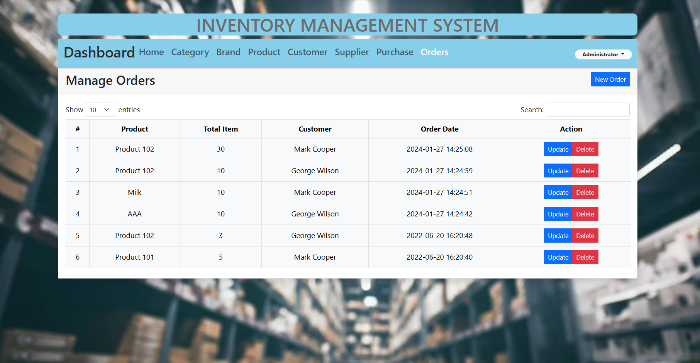
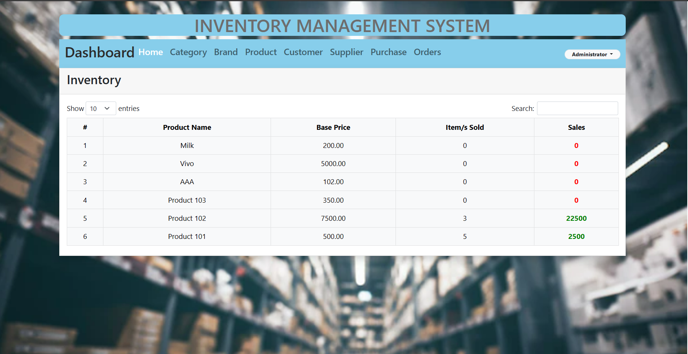
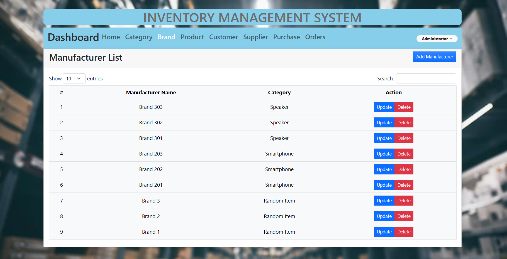
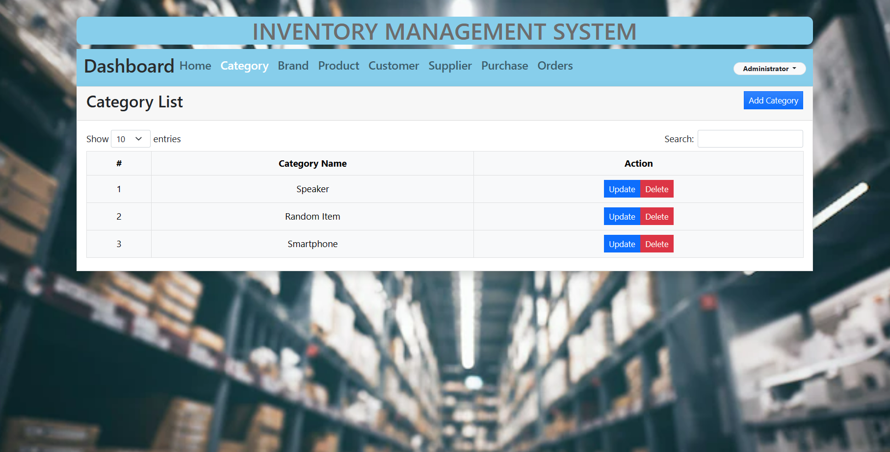
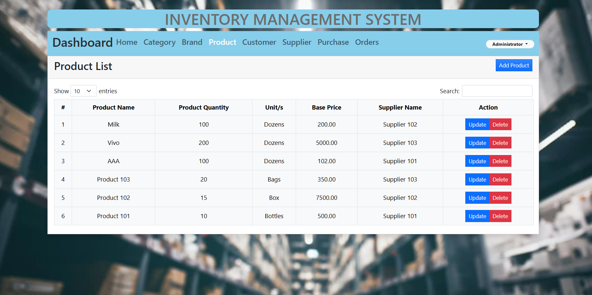
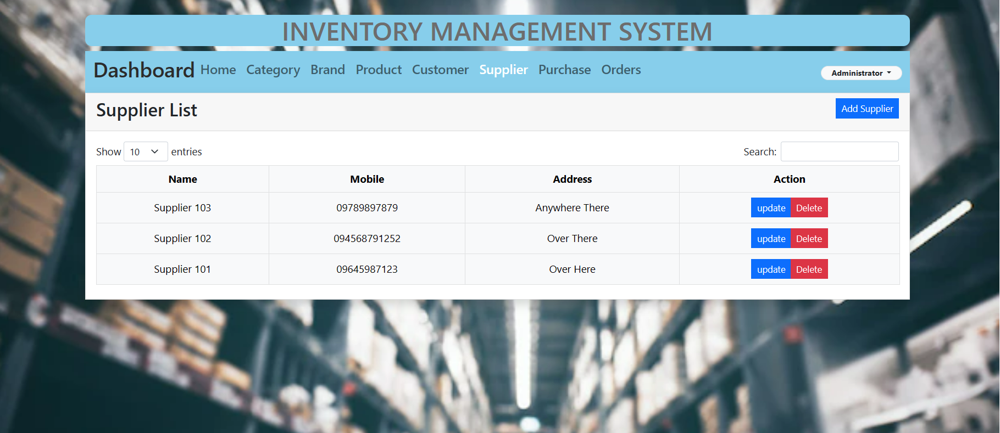
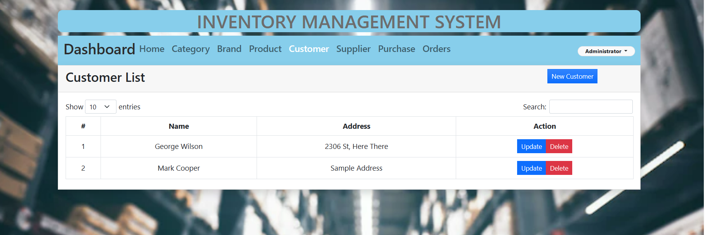
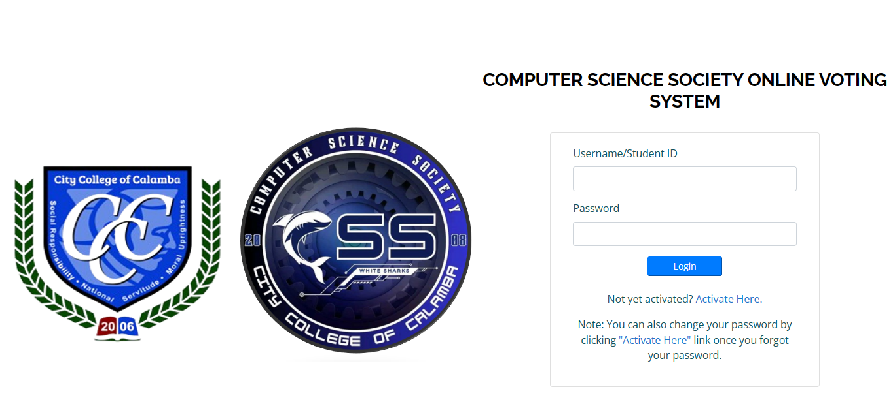

About MeHi, I'm Here To Help On Your Next Project!
I have been able to master multi-tasking since I am trained to communicate verbally while navigating on the computer tools. I have strong time-management skills and work ethic. Ambitious, eager to keep growing and evolving in my profession.
I'm a passionate web developer with a knack for turning ideas into interactive and visually appealing digital experiences. Proficient in a variety of programming languages and frameworks, I thrive on crafting clean, efficient code to bring websites to life. From responsive designs that adapt seamlessly to different devices, to optimizing user experiences and ensuring top-notch functionality, I take pride in creating web solutions that not only meet but exceed expectations. Let's collaborate to transform your vision into a dynamic and user-friendly online presence.
Starting with these skills, I thrive and savor every moment.
HTML
84%
CSS
50%
Graphic Designing
75%
UI/UX Design
80%
PROJECTS
"Inventory Management System"
An efficient inventory management system is essential for businesses to streamline operations, optimize stock levels, and ensure timely restocking, ultimately enhancing overall organizational efficiency and customer satisfaction and relation.
INVENTORY MANAGEMENT SYSTEM
An effective inventory management system is critical for the seamless running of any organization, acting as the backbone that assures the best balance between supply and demand. This approach entails meticulous monitoring and management of a company's complete inventory, including raw materials, work-in-process, and finished items. The main goals of an inventory management system are to reduce carrying costs, avoid stockouts, and improve overall operational efficiency. Businesses may get real-time insight into their inventory levels and automated tracking systems. This allows for precise demand forecasting and prompt restocking. This not only helps to reduce excess stock and related holding costs, but it also guarantees that items are always accessible to satisfy client demand, promoting customer pleasure and loyalty.
Furthermore, the inventory management system helps with strategic decision-making by offering useful insights into product performance, detecting slow-moving products, and assisting in the discovery of appropriate reorder points. Businesses may use data analytics and reporting services to optimize their supply chain, minimize lead times, and improve order fulfillment procedures. In summary, a well-implemented inventory management system is a vital component in achieving operational excellence, allowing firms to adapt quickly to market swings, reduce financial risks, and preserve a competitive advantage in today's dynamic business climate.
This thesis project endeavors to design, implement, and evaluate an innovative inventory management system (IMS) as a comprehensive solution for businesses grappling with the challenges of maintaining optimal inventory levels. The significance of this research lies in its potential to revolutionize traditional inventory control methods, leveraging advanced technologies such as RFID, barcode scanning, and machine learning algorithms. The proposed IMS aims to provide real-time visibility into the entire supply chain, facilitating accurate demand forecasting, minimizing carrying costs, and preventing stockouts. By addressing these key aspects, the research aims to demonstrate the profound impact of an optimized IMS on operational efficiency, cost-effectiveness, and overall business performance.
The defendable nature of this thesis project stems from its practical application in real-world business scenarios. The research will not only focus on the theoretical framework and technological aspects of the IMS but will also include a thorough assessment of its implementation in a specific business context. This includes evaluating the system's efficacy in improving order fulfillment processes, reducing lead times, and enhancing customer satisfaction. The defendable thesis project, therefore, seeks to contribute empirically grounded insights, offering businesses a strategic and actionable approach to inventory management, ultimately fostering operational excellence and competitive advantage in today's dynamic market landscape.








"Online Voting System"
An online voting system in schools enhances student engagement in decision-making, providing a user-friendly platform to cast their votes on various matters, fostering a participation and democracy within the educational community.
ONLINE VOTING SYSTEM
In this thesis project, the aim is to design, implement, and assess the viability of an online voting system as a transformative solution to modernize democratic processes. The research is driven by the pressing need to address conventional voting challenges, including accessibility barriers, logistical constraints, and concerns about the security of electronic voting. By incorporating advanced techniques and secure data encryption, the proposed system seeks to establish a foundation of trust and transparency, essential for the integrity of the democratic process. The defendable nature of this thesis project arises from its meticulous examination of the online voting system, not only in theoretical terms but through practical testing and validation, including simulated election scenarios. Through a thorough analysis of potential vulnerabilities, user interface design, and user experience, this research aims to provide substantiated insights into the reliability, security, and usability, contributing to the ongoing discourse on the potential adoption of online voting systems in democratic societies.
Furthermore, the thesis project acknowledges the importance of addressing societal concerns surrounding the adoption of online voting systems. A comprehensive examination of legal and ethical considerations, alongside a comparative analysis and implementations in school, will be integral to the defendability of the project. By considering the broader socio-political context and engaging with stakeholders, the research seeks to present a well-rounded argument for the responsible integration of online voting systems, ensuring that the transition aligns with democratic principles while harnessing the efficiencies offered by digital technologies.
Online voting systems have emerged as a technological solution to enhance the democratic process by leveraging the power of the internet. These systems provide voters with the convenience of casting their ballots from the comfort of their homes or any location with internet access, eliminating the need to physically visit polling stations. One of the key advantages of online voting is increased accessibility, as it allows individuals with mobility issues, busy schedules, or those living in remote areas to participate in the electoral process more easily. Moreover, online voting systems can contribute to higher voter turnout by addressing barriers that may prevent certain demographics from engaging in traditional voting methods.
However, the adoption of online voting systems also raises concerns related to security, privacy, and the potential for manipulation. Ensuring the integrity of the electoral process is paramount, as any compromise in the system's security could undermine the trust in the democratic system. Robust cybersecurity measures, encryption protocols, and thorough testing are essential to safeguard against hacking and fraud. Additionally, addressing issues of digital literacy and providing alternative voting methods for those without internet access are important considerations to ensure inclusivity and fairness in the transition to online voting systems. Balancing the benefits of convenience with the imperative to maintain a secure and transparent electoral process is crucial for the successful implementation and acceptance of online voting.